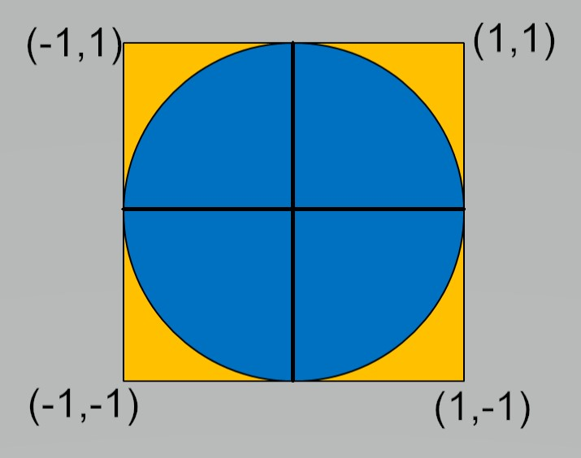

Classical introduction to parallel computing - estimating pi in CUDA¶
An easy introduction to parallel computing¶
A standard way to introduce the concepts of parallel programming is to look at some of the ways to approximate pi \((\pi)\). Since CUDA exposes a highlevel of parallelism on the GPU, a logical question is how well similar efforts run on a CUDA GPU.
One approach is to use a form of Monte-Carlo estimation on a quarter of a unit circle. This can be highly parallel, but not efficient.
The general idea is to generate a large number N of random pairs \((x_i,y_i)\) in [0,1]x[0,1].
Count the cases M when \(x_i^2 + y_i^2 \le 1\) Then \({M \over N} \approx {\pi \over 4}\)
The idea is to generate these N random pairs in parallel.
Care must be taken to ensure we have parallel random seeds and we need a global sum for M.
The standard way of generating pseudorandom numbers in CUDA is to use curand_init() and curand_uniform() as device functions,
only callable from within kernel functions.
// Approximation of Pi using a simple, and not optimized, CUDA program
// Copyleft Alessandro Re
// From https://gist.github.com/akiross/17e722c5bea92bd2c310324eac643df6
//
// GCC 6.x not supported by CUDA 8, I used compat version
//
// nvcc -std=c++11 -ccbin=gcc5 pigreco.cu -c
// g++5 pigreco.o -lcudart -L/usr/local/cuda/lib64 -o pigreco
//
// This code is basically equivalent to the following Python code:
//
// def pigreco(NUM):
// from random import random as rand
// def sqrad():
// x, y = rand(), rand()
// return x*x + y*y
// return 4 * sum(1 - int(test()) for _ in range(NUM)) / NUM
//
// Python version takes, on this machine, 3.5 seconds to compute 10M tests
// CUDA version takes, on this machine, 1.6 seconds to compute 20.48G tests
//
#include <stdio.h>
#include <iostream>
#include <limits>
#include <cuda.h>
#include <curand_kernel.h>
using std::cout;
using std::endl;
typedef unsigned long long Count;
typedef std::numeric_limits<double> DblLim;
const Count WARP_SIZE = 32; // Warp size
const Count NBLOCKS = 1792; // Number of total cuda cores on my GPU
// 5120 for v100; 1792 for Quadro P4000
const Count ITERATIONS = 1000000; // Number of points to generate (each thread)
// This kernel is
__global__ void picount(Count *totals) {
// Define some shared memory: all threads in this block
__shared__ Count counter[WARP_SIZE];
// Unique ID of the thread
int tid = threadIdx.x + blockIdx.x * blockDim.x;
// Initialize RNG
curandState_t rng;
curand_init(clock64(), tid, 0, &rng);
// Initialize the counter
counter[threadIdx.x] = 0;
// Computation loop
for (int i = 0; i < ITERATIONS; i++) {
float x = curand_uniform(&rng); // Random x position in [0,1]
float y = curand_uniform(&rng); // Random y position in [0,1]
counter[threadIdx.x] += 1 - int(x * x + y * y); // Hit test - I think this is clever- CA
}
// The first thread in *every block* should sum the results
if (threadIdx.x == 0) {
// Reset count for this block
totals[blockIdx.x] = 0;
// Accumulate results
for (int i = 0; i < WARP_SIZE; i++) {
totals[blockIdx.x] += counter[i];
}
}
}
int main(int argc, char **argv) {
struct timespec start , stop ; // variables for timing
double accum ; // elapsed time variable
double pi25DT=3.141592653589793238462643;
double estimate;
int numDev;
cudaGetDeviceCount(&numDev);
if (numDev < 1) {
cout << "CUDA device missing! Do you need to use optirun?\n";
return 1;
}
cout << "Starting simulation with " << NBLOCKS << " blocks, " << WARP_SIZE << " threads, and " << ITERATIONS << " iterations\n";
// Allocate host and device memory to store the counters
Count *hOut, *dOut;
hOut = new Count[NBLOCKS]; // Host memory
cudaMalloc(&dOut, sizeof(Count) * NBLOCKS); // Device memory
clock_gettime ( CLOCK_REALTIME ,&start ); // timer start
// Launch kernel
picount<<<NBLOCKS, WARP_SIZE>>>(dOut);
cudaDeviceSynchronize(); // Need matrices to be defined before continue
clock_gettime ( CLOCK_REALTIME ,&stop ); // timer stop
// Copy back memory used on device and free
cudaMemcpy(hOut, dOut, sizeof(Count) * NBLOCKS, cudaMemcpyDeviceToHost);
cudaFree(dOut);
// Compute total hits
Count total = 0;
for (int i = 0; i < NBLOCKS; i++) {
total += hOut[i];
}
Count tests = NBLOCKS * ITERATIONS * WARP_SIZE;
cout << "Approximated PI using " << tests << " random tests\n";
// Set maximum precision for decimal printing
cout.precision(DblLim::digits10); // Original code failed with max_digits10
estimate = 4.0 * (double)total/(double)tests;
cout << "PI ~= " << estimate << endl;
printf("Pi error is %.16f \n", pi25DT-estimate);
accum =( stop.tv_sec - start.tv_sec )+ // elapsed time create A
( stop.tv_nsec - start.tv_nsec )*1.e-9 ;
printf ("Monte pi took : %lf sec .\n",accum ); // print el. time
return 0;
}
Local changes to the code were to fix a compilation error, and to add in timings and an error estimate.
Output from the code on a Quadro P4000 is:
Starting simulation with 1792 blocks, 32 threads, and 1000000 iterations
Approximated PI using 57344000000 random tests
PI ~= 3.14159992717634
Pi error is -0.0000072735865460
Monte pi took : 0.661215 sec .
This is a good deal of work and time for a fairly poor result.
There is another important aspect about this code. Notice that it limits the size of each thread block to 32 - the size of a thread warp, that is the number of tightly coupled and synchronised threads in a unit of computation. CUDA does allows thread blocks to have up to 1024 blocks. Certainly in this case, there are reasons to suspect little performance gain by increasing the number of threads per block (or the number of blocks for that matter), but it should be possible. If we just increase the number of threads per block from 32 to 64, we get an interesting and wrong answer:
./montebig
Starting simulation with 1792 blocks, 64 threads, and 1000000 iterations
Approximated PI using 114688000000 random tests
PI ~= 1.57781224898856
Pi error is 1.5637804046012329
Monte pi took : 1.256798 sec .
The reason for this severe under estimation of the answer is that threads in different warps need to be synchronised before thread[0] in
each thread group can accumulate the sums. Therefore a __syncthreads() call is needed before this summation is performed. When that is
added, we then get:
./montebig
Starting simulation with 1792 blocks, 64 threads, and 1000000 iterations
Approximated PI using 114688000000 random tests
PI ~= 3.14159132240513
Pi error is 0.0000013311846594
Monte pi took : 1.222475 sec .
Also notice that doubling the number of threads in each thread group roughly doubles the compute time - reinforcing the suggestion that the GPU resources are being used fully in the initial configuration.
Moving onto faster but still parallel approximations¶
The next stage in an easy to understand parallel approximation of \(\pi\) is to look at numerical quadrature approximations to an integral that also defines \(\pi\).
The standard formula is:
Of course, the integral can be broken into an arbitrary number of pieces. In Python or MATLAB environments running on mutli-core architectures, this is often the most effective way to approximate \(\pi\). The standard MPI parallel example approximates this integral with the composite mid-point rule.
This leads to:
In essence we are doing a parallel sum over the GPU threads. This is possible to do very efficiently and it is one of the Advanced examples in the CUDA samples code, see
$CUDA_HOME/samples/6_Advanced/reduction to look at the code. Unfortunately, the code gets fairly complicated, which is why it is in the Advanced section.
The reason for the complexity is that by design there is no global synchronisation across all threads on the GPU. It is possible to synchronise a pool of threads
(which can involve up to 1024 threads), but there is no easy way to synchronise across pools of threads. The simplest, but most inefficient way, is to sychronise
everything on the device with the CPU using the cudaDeviceSynchronize() command.
In order to have code that is reasonably understandable, we work with a single pool of threads - not a silly option for what is actually a small amount of work.
Borrowing heavily from code provided (with a good overiew) in https://sodocumentation.net/cuda/topic/6566/parallel-reduction–e-g–how-to-sum-an-array- we have:
// Modified from global reduction code in
// https://sodocumentation.net/cuda/topic/6566/parallel-reduction--e-g--how-to-sum-an-array-
// System includes
#include <stdio.h>
#include <assert.h>
#include <iostream>
#include <math.h>
// CUDA runtime
#include <cuda_runtime.h>
#define BILLION 1000000000L
// Note this cannot be executed on the CPU - just on the GPU
__device__ double f( double a )
{
return (4.0 / (1.0 + a*a));
}
__global__ void PiEstSingleBlock(long N, double *piest) {
int idx = threadIdx.x;
int blockSize = blockDim.x; // We are exploiting the fact that there is just one thread group
double h;
double sum = 0.0;
h = 1.0/(double)N;
// Do the parallel partial sums for pi
for (long i = idx+1; i <= N; i += blockSize)
sum += f(h * ((double)i - 0.5));
__shared__ double p[1024]; // The maximum number of threads is 1024
// We can make this storage dynamic in size to paramterise
// over the number of threads used.
// Now add the partial sums together
p[idx] = h*sum;
__syncthreads();
for (int size = blockSize/2; size>0; size/=2) { //uniform
if (idx<size)
p[idx] += p[idx+size];
__syncthreads();
}
if (idx == 0)
*piest = p[0];
}
int main(void) {
struct timespec start , stop ; // variables for timing
double accum ; // elapsed time variable
const unsigned int blockSize=1024;
dim3 numThreads;
double pi25DT=3.141592653589793238462643;
double x;
double *mypi;
long N = 1000000;
double sum, h;
h = 1.0/(double)N; // For CPU version of loop
numThreads.x = blockSize;
cudaMallocManaged(&mypi, sizeof(double));
clock_gettime ( CLOCK_REALTIME ,&start );
PiEstSingleBlock<<<1,numThreads>>>(N, mypi);
cudaDeviceSynchronize(); // Cannot get sensible timing without synchronising host and device
clock_gettime ( CLOCK_REALTIME ,&stop );
accum =( stop.tv_sec - start.tv_sec )+
( stop.tv_nsec - start.tv_nsec )/(double)BILLION ;
printf("Pi estimate %.16f error is %.16f", mypi[0],pi25DT-mypi[0]);
printf("\n");
printf("Time to compute mypi is %lf sec.\n",accum);
clock_gettime ( CLOCK_REALTIME ,&start );
sum = 0.0;
for (long i=1; i <= N; i++){
x = h * ((double)i - 0.5);
sum += 4.0/(1.0+x*x);
}
clock_gettime ( CLOCK_REALTIME ,&stop );
accum =( stop.tv_sec - start.tv_sec )+
( stop.tv_nsec - start.tv_nsec )/(double)BILLION ;
printf("CPU pi is %.16f error is %.16f\n",h*sum,pi25DT-h*sum);
printf("Time to compute CPU pi is %lf sec.\n",accum);
}
The results of this code on a system with a Skylake CPU and a Quadro P4000 is:
Pi estimate 3.1415926535898766 error is -0.0000000000000835
Time to compute mypi is 0.004875 sec.
CPU pi is 3.1415926535897643 error is 0.0000000000000289
Time to compute CPU pi is 0.016786 sec.
What is interesting in this case is that the computation on the GPU is faster than on the CPU on a relatively small workload. Both are considerably faster and more accurate than the Monte Carlo approximation.
The time required for the Monte Carlo approximation is lower on systems with v100 GPUs, but the integral approximation is still faster and more accurate.
On a system with a v100 and Cascade Lake 5218 (2.30GHz) - Driver Version: 460.32.03 CUDA Version: 11.2
Monte Carlo approximation
./montepi
Starting simulation with 1792 blocks, 32 threads, and 1000000 iterations
Approximated PI using 57344000000 random tests
PI ~= 3.14158569614955
Pi error is 0.0000069574402395
Monte pi took : 0.156507 sec .
Composite Mid-Point
./pi
Pi estimate 3.1415926535898766 error is -0.0000000000000835
Time to compute mypi is 0.000984 sec.
CPU pi is 3.1415926535897643 error is 0.0000000000000289
Time to compute CPU pi is 0.035159 sec.
On login2 of Bede - AC922 - v100 with Power 9 (3.8GHz) - Driver Version: 440.95.01 CUDA Version: 10.2
Monte Carlo approximation
./montepi
Starting simulation with 1792 blocks, 32 threads, and 1000000 iterations
Approximated PI using 57344000000 random tests
PI ~= 3.14159480113002
Pi error is -0.0000021475402292
Monte pi took : 0.165825 sec .
Composite Mid-Point
./pi
Pi estimate 3.1415926535898766 error is -0.0000000000000835
Time to compute mypi is 0.000507 sec.
CPU pi is 3.1415926535897643 error is 0.0000000000000289
Time to compute CPU pi is 0.006880 sec.
Notice that the Monte Carlo approximation can use all of the v100 CUDA cores, but the results show this modest change has little influence on accuracy - suggesting that the Monte Carlo simulation is only converging slowly.
./montepi2
Starting simulation with 5120 blocks, 32 threads, and 1000000 iterations
Approximated PI using 163840000000 random tests
PI ~= 3.14159536311035
Pi error is -0.0000027095205586
Monte pi took : 0.400903 sec .
Increasing the number of iterations per thread by an order of magnitude yields:
./montepi2
Starting simulation with 5120 blocks, 32 threads, and 10000000 iterations
Approximated PI using 1638400000000 random tests
PI ~= 3.14159246824707
Pi error is 0.0000001853427229
Monte pi took : 3.407919 sec .
This change appears to have improved accuracy and the cost has gone up 8.5 (rather than 10), so this may be the better approach to get a more accurate solution, but it is considerably slower than the composite mid-point rules and is really only appropriate for demonstration purposes.
Follow-up work¶
It would be sensible to have OpenACC and OpenMP versions of the compostite mid-point rule example to show the relative ease with which GPU parallelism can be expressed in these higher level environments. The basic loop involved in each case is trivial.